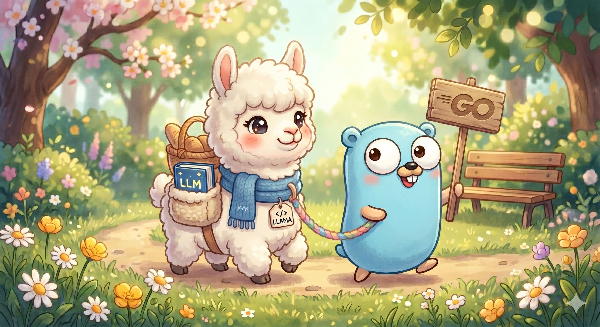
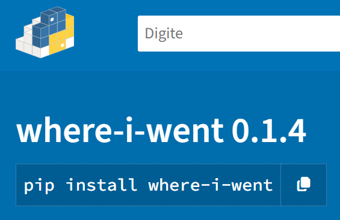

Projetos
Software, IA local, sistemas embarcados e IoT.
Rede social mobile-first para a UFABC com FastAPI, Preact e moderação por visão computacional.

Inferência local de Llama 3.2 em Go e Cgo com aceleração SIMD (AVX2/NEON), sem dependência de nuvem.

Extração de coordenadas GPS em fotos JPEG/JPG e geração de mapas interativos com Folium.
Wearable ergonômico com ESP32 e sensor MPU-6050, transmitindo telemetria via WebSockets.
Captura de imagens em alta definição para placas Linux ARM (Raspberry Pi) via câmeras CSI e USB.